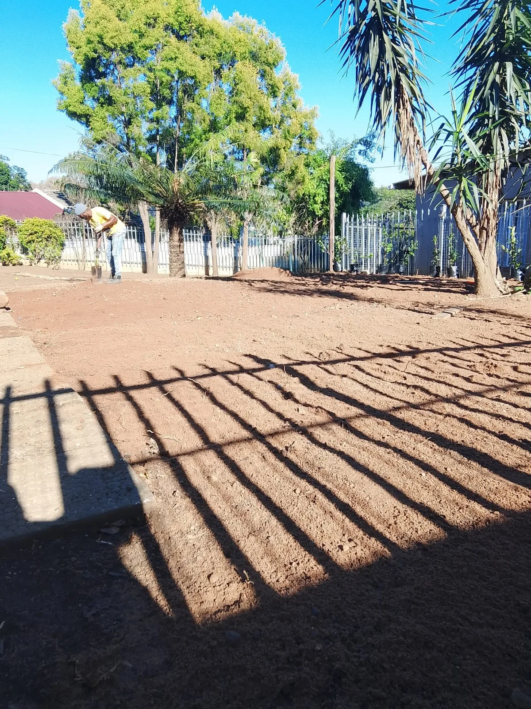

Clear the area
Remove old grass, weeds, stones and debris so the new turf sits directly on a suitable soil surface.
Ground preparation
The work below the turf matters. Clearing, shaping and levelling the soil creates a neat foundation and helps your new instant lawn make good contact with the ground.
Clearing · Levelling · Soil preparation



The foundation
Uneven ground, old growth and loose stones can show through a new lawn or prevent good soil contact. Careful preparation helps avoid those problems before the turf arrives.
We consider the shape of your space, existing surface and the finish needed for laying. The aim is a clear, level and workable base for your instant lawn.
Explore natural instant turfWhat preparation involves
Remove old grass, weeds, stones and debris so the new turf sits directly on a suitable soil surface.
Work the ground into a smooth, even surface with attention to the layout and edges of the space.
Rake and refine the soil so it is ready for close turf placement and a more polished final result.
The preparation process
Look at the existing ground, access, shape and project requirements.
Remove unwanted growth, stones and material from the lawn area.
Shape and rake the soil into a smooth, suitable foundation.
Once prepared, fit the instant turf and begin watering promptly.
Preparation FAQs
Clearing old growth is strongly recommended. It allows the new turf to contact the soil directly and creates a cleaner, more even base.
Levelling reduces bumps and hollows that can affect the finished appearance. It also helps create consistent contact between the turf and soil.
Send clear photos and your approximate measurements. The team can discuss the existing surface and the preparation likely to be needed.
Next steps
Real grass and immediate green coverage for your prepared space.
Learn moreNeat placement, close joins and carefully trimmed edges.
Learn morePractical watering and care advice for your establishing lawn.
Learn moreStart with the right foundation
Send photos and measurements to discuss preparation for your new lawn.